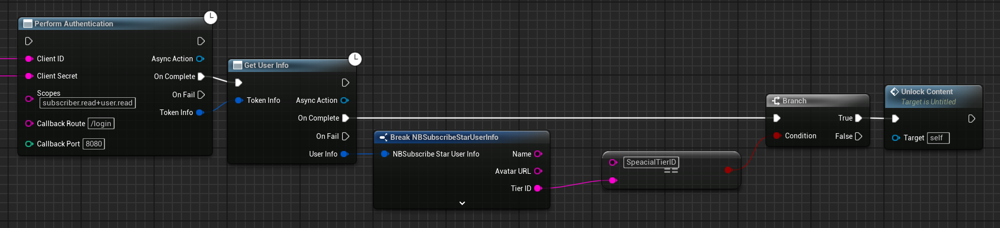

Simple Setup & Usage
This is the simplest approach, but it requires that your Client ID and Client Secret be built into your application or
are somehow retrievable by your application at run-time.
While you can take steps to make extracting these from your project difficult (e.g. only storing encrypted strings which are
decrypted at run-time), there will always be a risk that one of your users will be able to locate and extract them. For this
reason, you should always ensure you are using the smallest number of scopes when you register the integration on the
SubscribeStar side, you should never include any content_provider_profile scopes.
Your Redirect URI in your registered client should start with http://localhost
The process will work like this:
- You open the SubscribeStar login and consent page for your user (either using their default web browser or the UMG Web Browser widget).
- While they are signing in and granting your application access to their data, we start up an HTTP server within the game application
a. By default the server will listen for a request at
http://localhost:8080/login, but you can customize this as you see fit b. Whatever you configure the server to use, you need to ensure that your integration's configuration on the SubscribeStar side has a matchingRedirect URL, e.g. if you setCallback Routeto/login/subscribestarandCallback Portto9999, you must update the settings in your SubscribeStar profile to include aRedirect URLofhttp://localhost:9999/login/subscribestar.The
Callback RouteMUST start with"/"and be longer than just"/"but can otherwise be anything you want.The
Callback PortMUST be a positive integer, and unless you plan to use port80should be larger than1024 - After consenting to sharing their data with your application, SubscribeStar will make a request to the built-in HTTP server with a one-time use code we use to obtain an
Access Tokenon behalf of the user. - Once we have an access token, we use this to request the user's account information, including any specific tiers they are subscribed to.
- You can then use this information as you want, e.g. checking if they are subscribed to a specific tier or paying over a certain amount for their subscription and unlocking some content for them.
That sounds like a lot, but steps 1-3 are encapsulated inside of a single function which can be chained to a second function to handle step 4 for you, leaving only the actual logic for your application in step 5 up to you to implement.
Blueprint

C++
#include "Actions/NBSSGetUserInfoAction.h"
#include "Actions/NBSSAuthenticationAction.h"
#include "NBSubscribeStarAPITokenInfo.h"
#define CLIENT_ID TEXT("<Your Client ID>")
#define CLIENT_SECRET TEXT("<Your Client Secret>")
void MyClass::DoSubscribeStarLogin() {
// create an authentication action expecting a callback at http://localhost/login:8080
UNBSSAuthenticationAction* authAction = UNBSSAuthenticationAction::PerformAuthenticationAsyncAction(
this, // world context
CLIENT_ID,
CLIENT_SECRET
// scopes default to "subscriber.read+user.read"
// callback route defaults to "/login"
// callback port defaults to 8080
);
// register callbacks for results
authAction->OnComplete.AddDynamic(this, &MyClass::OnAuthenticationComplete);
authAction->OnFail.AddDynamic(this, &MyClass::OnAuthenticationFailed);
// kick off action
authAction->Activate();
}
void MyClass::OnAuthenticationComplete(FNBSubscribeStarAPITokenInfo TokenInfo) {
// now that we have a token, we can use it to fetch information about the user who just logged in
UNBSSGetUserInfoAction* getInfoAction = UNBSSGetUserInfoAction::UNBSSGetUserInfoAction(
this, // world context
TokenInfo
);
getInfoAction->OnComplete.AddDynamic(this, &MyClass::OnGetUserInfoComplete);
getInfoAction->OnFail.AddDynamic(this, &MyClass::OnGetUserInfoFail);
getInfoAction->Activate();
}
void MyClass::OnAuthenticationFailed() {
UE_LOG(LogTemp, Error,
TEXT("SubscribeStar authentication failed: The user may have denied the request for their data")
);
}
void MyClass::OnGetUserInfoComplete(FNBSubscribeStarUserInfo UserInfo) {
// now that we have the user's information,
// we can check if they have subscribed to a tier with unlockable content
if (UserInfo.HasActiveSubscription && UserInfo.TierID == "SpecialTierID") {
UnlockSecretConent();
} else {
// suggest the user should pledge to the Special Tier ;)
}
}
void MyClass::OnGetUserInfoFail() {
UE_LOG(LogTemp, Error,
TEXT("Fetching user info from SubscribeStar API failed: Was the access token invalid?")
);
}
For any questions, help, suggestions or feature requests, please feel free to contact me at nbpsup@gmail.com